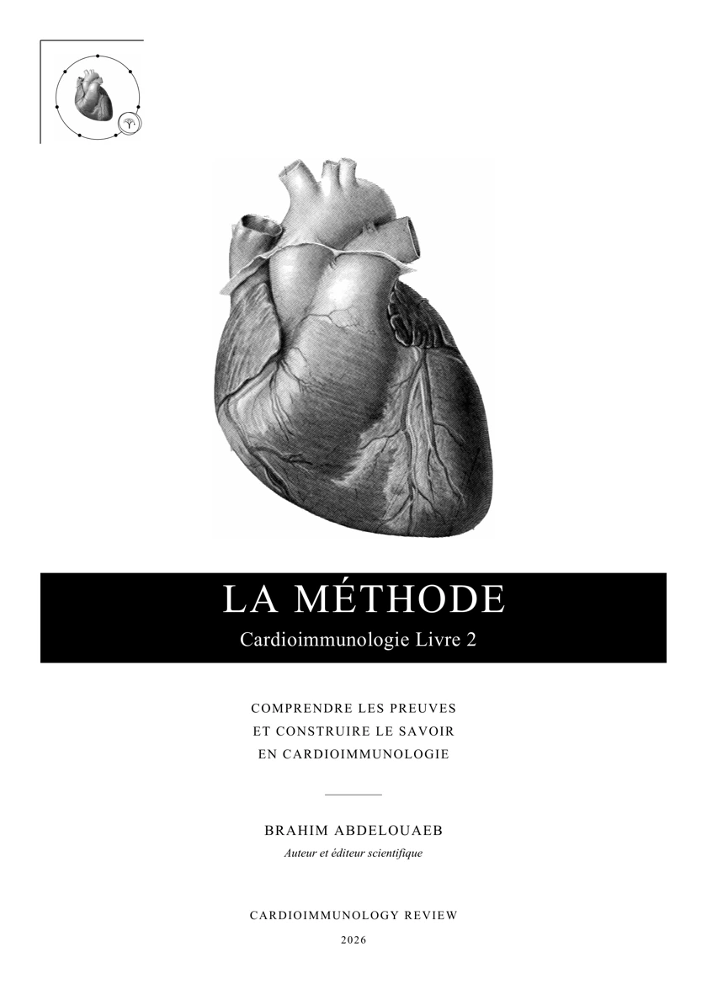
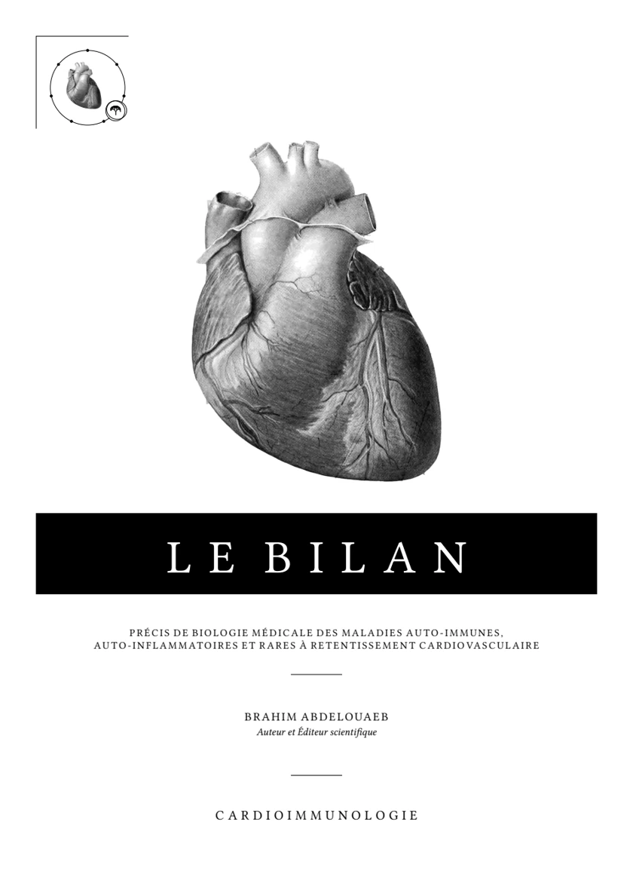

Le Traité
Cardioimmunologie
Maladies auto-immunes, auto-inflammatoires et rares à retentissement cardiovasculaire. Traité de médecine
Des bases immunologiques à la transplantation. Direction scientifique : Mahmoud Alaa Eddine Belkenadil.
La collection
Trois livres de cardioimmunologie en accès libre, et une revue. Chaque livre se lit en ligne, chapitre par chapitre, ou se télécharge en PDF.
Le Traité
Maladies auto-immunes, auto-inflammatoires et rares à retentissement cardiovasculaire. Traité de médecine
Des bases immunologiques à la transplantation. Direction scientifique : Mahmoud Alaa Eddine Belkenadil.

Livre 2
Comprendre les preuves et construire le savoir en cardioimmunologie
Cent textes scientifiques commentés selon quatre lectures : critique, immunologique, cardiologique et clinique intégrative. Traduction anglaise : The Method.

Le cœur silencieux des vascularites associées aux ANCA, numéro 1, octobre 2026. Tous les numéros →
L’architecture scientifique et clinique du Traité présente l’organisation du livre et propose des pistes d’utilisation pédagogique.